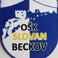
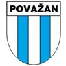

Posledný zápasA-mužstvo
 FKS Nemšovádomáci
FKS NemšovádomáciVýsledok 3:2
Prehrapolčas 1:0
Návrh webu · nie je to oficiálna stránka klubu
Obecný športový klub · ročník 2026/27
Futbal pod erbom so svätým Jurajom, ktorý zlatou kopijou prebodáva draka. Áčko hrá VI. ligu Sever a po jeseni je na 11. mieste zo 14, mládež U15 a U13 súťaže Oblastného futbalového zväzu Trenčín.

Zimná prestávka. Prvé jarné zápasy sú v nedeľu 14. marca 2027 (U15 Starší žiaci), áčko začína v nedeľu 21. marca 2027 vonku na ihrisku FK Košeca.
VI. liga Sever
Posledný zápasA-mužstvo
FKS NemšovádomáciVýsledok 3:2
Prehrapolčas 1:0
Rozpis a zástavky
11.
miesto zo 14 · 10 bodov
| # | Tím | Z | V | R | P | Skóre | B |
|---|---|---|---|---|---|---|---|
| 9 | 12 | 4 | 1 | 7 | 26:30 | 13 | |
| 10 | 12 | 4 | 0 | 8 | 16:40 | 12 | |
| 11 | 12 | 3 | 1 | 8 | 23:41 | 10 | |
| 12 |  OŠK Slovan Beckov | 12 | 2 | 1 | 9 | 21:43 | 7 |
| 13 |  TJ Považan Pruské | 12 | 1 | 1 | 10 | 11:47 | 4 |
3výhry
8prehier
1 remíza · skóre 23:41
Áčko od 2013/14
Každý ročník ako kopija: čím vyššie áčko skončilo, tým dlhšia. Jedenásť ročníkov hralo Podolie V. ligu, od roku 2024 hrá VI. ligu Sever.
Z Podolských novín
Áčko
Po jeseni 2025 prezimovalo na 8. mieste VI. ligy Sever. Najlepším hráčom jesene bol Denis Novotný, vybrali ho aj do zostavy jesene celej súťaže.
Odchovanci
Do áčka sa zapracúvajú hráči, ktorí v Podolí začínali alebo odohrali mládežnícke kategórie: Vrba, Hutta, Novotný a brankár Ohrablo, vekom ešte dorastenec.
Mládež
Prípravka U11 skončila v ročníku 2024/25 šiesta z 13 tímov a na Memoriáli Daniela Šima v Bošáci tretia po výhre 9:1 v zápase o 3. miesto.
Hody
Letná príprava sa začína tradičným hodovým zápasom v Očkove, v roku 2025 sa skončil 5:5.
Zdroj: Podolské noviny 12/2025, rubrika Rok v obecnom športovom klube Podolie.
„Stále tvrdím, že mať stabilnú mládežnícku základňu je najpodstatnejšie pre prežitie amatérskeho, dedinského futbalu.“
Obec pod Malými Karpatmi
1332
Prvá písomná zmienka: v súpise pápežských desiatkov sa v Podolí uvádza farár Mikuláš.
1743
Pečať obce SIGILLUM POSSESIONIS PODOLA so svätým Jurajom. Z nej vychádza dnešný erb, ktorý nosí aj futbalový klub.
Kostol sv. Juraja
Kostol spomínaný už začiatkom 14. storočia stojí na vyvýšenine nad Podolským potokom. V 17. storočí ho obohnali kamenným múrom so strieľňami, pravdepodobne po roku 1663, keď osmanské vojsko obsadilo Nové Zámky.
2 200 pred n. l.
V polohe Horné Brežné preskúmali archeológovia v roku 1963 opevnené sídlisko bošáckej skupiny z konca neskorej doby kamennej.
Park miniatúr
Od roku 2003, keď pokrstili prvý model – hrad Branč, vyrástlo v Podolí viac ako sto modelov hradov a zámkov. Ročne ich príde pozrieť okolo 35 000 ľudí.
Zdroj: web obce Podolie (Základné informácie, Obecná symbolika, Pamiatky v obci, Najstaršie osídlenie), Park miniatúr podľa Podolských novín 12/2025.
Hlavná, Podolie
Najbližšie doma
Najbližší zápasA-mužstvo
Výkop o 15:00